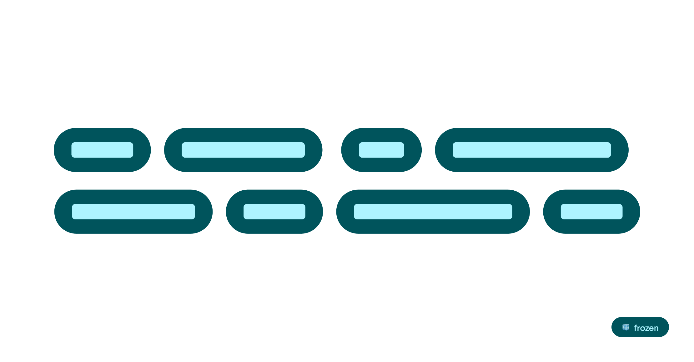
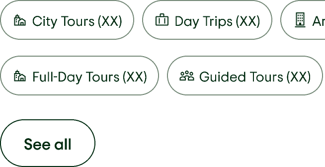

What is a frozen component?
Frozen components require a larger investigation of code parity. They are not currently scheduled to be redesigned, or receive bug or contribution support. Please use with discretion.
Component

Storybook Demo
In order to properly view this demo, please make sure you’re connected to the Tripadvisor Global Protect VPN.